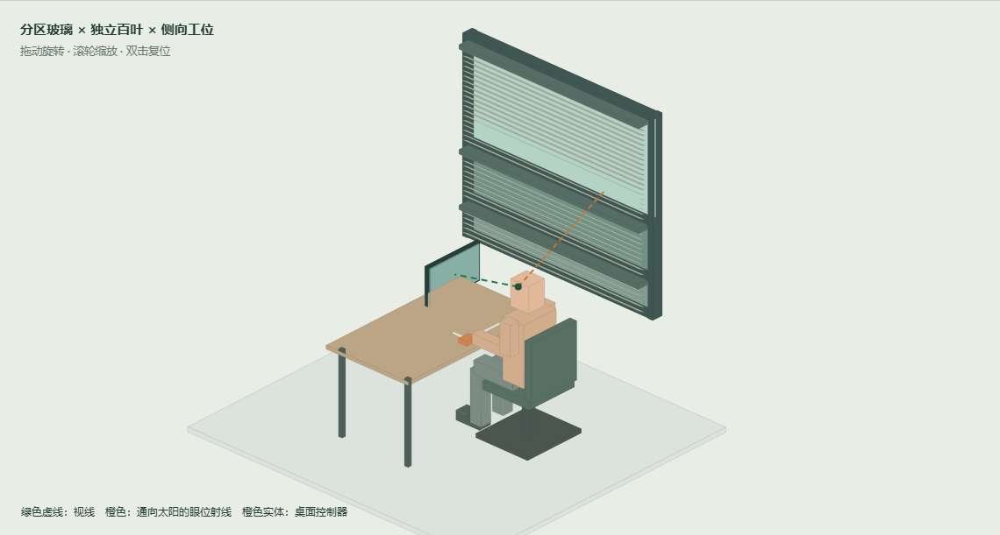

方案 B · 概念设计验证 · 2026 年 9 月 16 日光域双层窗参数化建模与人因分析
针对靠窗办公时的直射光、屏幕反光与人工控制需求，建立了分区智能玻璃、内侧百叶、办公工位和简化坐姿人体的参数化模型。当前结果支持继续细化，但不能据此判定视觉舒适、节能效果或产品合规性已经达标。
主要设计修正是：遮阳分区应依据眼位和太阳方向形成的光线路径选择，不能只按眼高所在区域选择。基准眼高为 1200 mm，位于中区，但太阳高度角 25° 时的窗面交点约为 1620 mm，已经进入上区。默认显示器上缘也比基准眼位高 30 mm，需要独立调低。

基准概念模型：橙色虚线为眼位回溯至窗面的太阳方向，绿色虚线为屏幕视线。1 模型范围与设计假设
依据用户提供的《光域双层窗人因设计方案.docx》，保留上中下三分区、电致变色玻璃与百叶分工、桌面人工覆盖和本地控制的概念。原文未提供工程尺寸；下表均为本次可修改的概念假设。三组眼高是敏感性情景，不是具有统计代表性的中国成人百分位。
| 项目 | 基准设定 | 建模解释 |
|---|
| 窗体 | 宽 1800，高 1600，窗台 800 mm | 上下框中心标高 800 / 2400；框厚度另计 |
| 分区标高 | 1100 / 1550 mm | 下区 800—1100；中区 1100—1550；上区 1550—2400 |
| 玻璃与百叶 | 玻璃面 x=-25；百叶轴 x=95 mm | 概念净分层约 120 mm；不含密封、驱动与装配公差验证 |
| 百叶 | 宽 50，厚 2，轴距 40 mm；30° | 三段分别布置；演示界面统一调角，未来应独立驱动 |
| 工位 | 桌面 1400×800，高 740 mm | 窗在人体侧方，视线沿窗平行方向；单人单窗 |
| 显示器 | 外形 540×320；中心标高 1070 mm | 上缘 1230；正面 y=-207；眼点 y=410 |
| 人体 | 眼高 1100 / 1200 / 1300；眼位距窗 900 mm | 座面高 450；人体为分段体块，未做关节约束 |
| 控制器 | 100×75×36 mm | 中心 x=眼位距窗+230，y=130；上表面标高 776 |
| 太阳方向 | 高度角 25°，偏离窗法线 0° | 人为输入情景；未绑定城市、日期、朝向和下午三点 |
2 结构与数据流
模型坐标：x 从窗向室内，y 沿窗水平，z 向上，单位 mm。参数由交互页面传入 model.js，生成同一组网格和几何分析数据，再用于三维显示、OBJ 导出与尺寸图导出。OBJ 保留部件分组，可在支持该格式的软件中继续编辑网格；不含 CAD 特征树、装配配合或加工信息。
控制流程属于实施建议，交互页面只计算静态几何，不连接传感器、不执行自动控制，也未模拟真实玻璃响应时间。上区目前仍布置百叶，因此玻璃颜色较浅并不等于视野完全开放。
3 坐姿视野与显示器
| 眼高情景 | 眼屏距离 | 向下视角 | 屏幕上缘相对眼位 | 肩点至控制器 |
|---|
| 1100 mm | 618 mm | 2.8° | 高 130 mm | 478 mm |
| 1200 mm | 631 mm | 11.9° | 高 30 mm | 519 mm |
| 1300 mm | 658 mm | 20.4° | 低 70 mm | 575 mm |
计算采用眼点到屏幕中心的欧氏距离和相对水平线的俯角。OSHA 的显示器指南给出一般优选观看距离 50—100 cm，并建议屏幕顶部处于眼平或略低的位置。这里三种视距均落在该参考范围内，但低眼高和基准情景的上缘位置仍需调整，不能只凭视距判断工位适配。该指南是设计参考，不是本项目的合规认证依据。
建议显示器提供至少 150 mm 的独立竖向调整行程，以覆盖本次低眼高情景的 130 mm 下调需要；具体行程仍应与支架、桌面及用户视觉需求核对。基准上区对应侧向仰角约 21.3°—53.1°，这主要保留较高方向视野；接近水平的远景实际上穿过中区。因此，中区持续变暗可能直接影响看向窗外的体验。
4 直射路径与百叶有效性
将眼位朝太阳回溯至窗面。太阳高度角为 α，偏离窗法线的水平角为 β，眼位距窗为 d，则窗面交点标高为 z窗 = z眼 + d·tan(α)/cos(β)，沿窗位置为 y窗 = y眼 − d·tan(β)。逐一检查该线段与理想薄叶片、框体及百叶盒是否相交。玻璃被视为允许该几何路径通过，不计算其实际透射强度。
| 基准眼位，β=0° | 窗面交点 | 入射分区 | 设计含义 |
|---|
| α=10° | 1359 mm | 中区 | 中区遮阳可能直接影响眼位路径 |
| α=25° | 1620 mm | 上区 | 只启动中下区会遗漏该路径 |
| α=45° | 2100 mm | 上区 | 保留上区不能作为无条件固定策略 |
在 α=25°、β=0° 的基准情景，0° 叶片存在通向眼位的几何路径，30° 时该路径被遮挡。这个结果仅覆盖单个理想眼点；头部移动、不同太阳方向、区域边界空隙及邻座位置均可能改变结论。不得将其概括为“30° 可以消除眩光”。
建议将眼位扩展为头部活动范围，在候选角度下逐点检查，并优先调节射线实际穿过的分区。当前未计算屏幕镜面反射路径，也未加入屏幕反射特性和亮度图，所以不报告屏幕反射改善百分比。侧向布置只是减少风险的起点；仍需在实际坐姿下观察屏幕反光。OSHA 工位环境指南同样建议调整工位与窗的相对方向以控制反光。
5 操作可达性与认知负荷
控制器距离按肩部参考点（x=眼位距窗，y=520，z=眼高−170）到控制器上表面中心计算。三个情景为 478—575 mm。这是空间距离，不是经过验证的舒适伸手包络；还缺少上臂、前臂、手长、肩宽和关节活动数据。建议把控制器移至鼠标附近的常用操作区，并允许左右手换位，通过实物测试确认无需探身、抬肩或越过键盘。
| 人因问题 | 建议交互 | 验证方法 |
|---|
| 模式名称与实际动作不明确 | 保留自动、减眩光、更多视野三个主要入口；明确当前分区状态 | 首次使用任务，记录选错与反复切换 |
| 自动控制覆盖用户意图 | 人工选择后保持，显式提供“恢复自动”；显示覆盖状态 | 手动操作后改变传感器输入，检查是否被立即改回 |
| 玻璃变化慢，用户重复按键 | 立即反馈“正在调整”；显示目标与执行状态 | 测量输入确认延迟及重复操作次数 |
| 频繁转动造成注意力干扰 | 设置滞回、稳定时间和最短动作间隔，急性直射另行处理 | 波动光照情景下记录动作次数与主观干扰 |
| 单人偏好影响邻座 | 按窗区绑定工位；冲突时显示共享控制状态 | 两人分别要求视野与防眩光，观察冲突解决 |
| “隐私”模式产生错误预期 | 未验证夜间隐私能力前不承诺单向可视；说明遮挡状态 | 昼夜室内外亮度对换下检查可见性 |
6 故障与环境舒适边界
照度传感器与有人检测不能直接提供视野中的亮度分布，也无法单独判定屏幕反射。补充太阳方向和工位几何可用于预判直射路径；要计算 DGP 等指标，应引入经校准的亮度图或经验证的光学仿真。Radiance 的 evalglare 文档提供了相应工具范围。
断网应保留本地操作；断电时玻璃状态、百叶位置和手动释放能力需依所选器件确认。传感器失效时显示故障并提供人工调节，避免持续来回动作。应验证夹手风险、驱动噪声、清洁可达性、维护拆装和窗户启闭冲突。本模型没有这些工程细节，不能用于制造或安装。
玻璃调暗不等于已证实减少太阳得热。本项目缺少光谱透射、反射、吸收、SHGC、室内温度及辐射温度等数据，未进行热舒适或节能计算。台灯补光同样需要任务面实测照度和用户偏好，当前不输出虚构的 lux 数值。
7 优先改进与验证安排
| 优先级 | 改进 | 通过依据 |
|---|
| 优先处理 | 按眼位—太阳路径选择分区；上区允许必要遮阳 | 目标头部活动范围内的直射路径逐点检查；现场复核 |
| 优先处理 | 显示器独立高度调节；控制器可移动 | 不同用户无需抬头、探身或抬肩完成任务 |
| 随后验证 | 人工覆盖保持、明确恢复自动、反馈执行状态 | 操作日志证明人工选择不会被自动策略即时撤销 |
| 随后验证 | 分区独立驱动，验证收起与维护空间 | 实体样机覆盖角度、碰撞、噪声及清洁测试 |
| 进一步量化 | 光学模型与真实工位试验 | 校准亮度图、桌面照度、用户舒适评分共同支持结论 |
建议先开展 6—8 人的探索性可用性试验，覆盖不同身高和用手习惯，用于发现问题而非宣称总体人群达标。比较无遮阳、整窗遮阳与分区双层控制，平衡任务顺序。记录阅读/输入任务完成情况、眩光主观评分、视野满意度、姿势调整次数、手动覆盖次数和自动动作次数。阈值应在正式试验前约定；本报告没有真实受试者数据或已完成的实验。
8 文件与参考依据
打开“光域交互模型.html”调整参数；同目录 model.js 为可编辑建模源代码。页面支持导出当前 OBJ、JSON 参数和 SVG 尺寸图。随附“光域基准模型.obj”与“光域尺寸图.svg”对应默认参数。离线移动时请一起保留全部文件。
- 用户提供的《光域双层窗人因设计方案.docx》：产品概念与使用场景；不含定量工程参数。
- OSHA Computer Workstations — Monitors：显示器距离与高度参考。
- OSHA Computer Workstations — Workstation Environment：反光与工位方向参考。
- Radiance Manual Pages：evalglare 与照明分析工具。